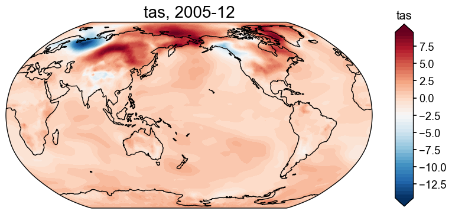
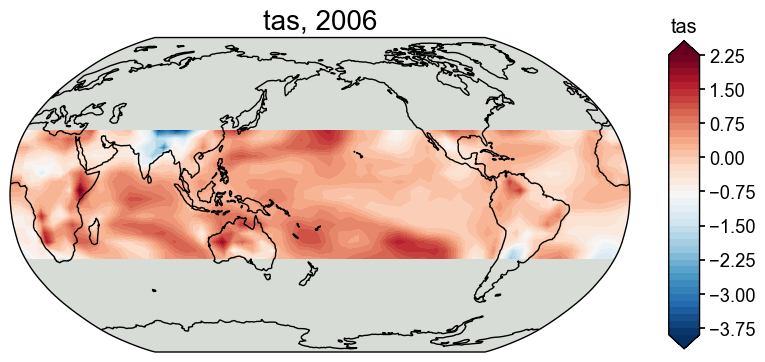
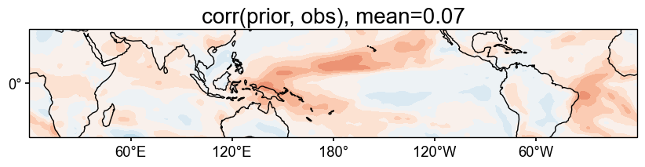
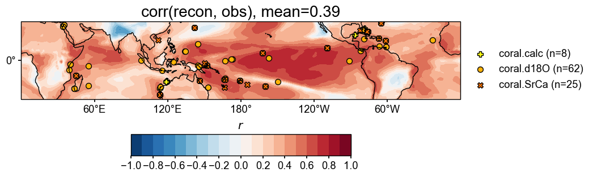
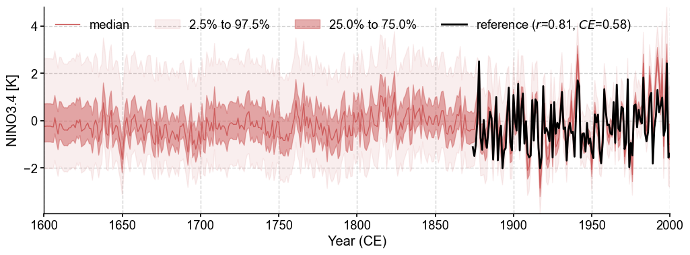

[1]:
%load_ext autoreload
%autoreload 2
import cfr
[2]:
job = cfr.ReconJob()
job.load_proxydb('PAGES2kv2')
[3]:
job.filter_proxydb(by='ptype', keys=['coral'])
fig, ax = job.proxydb.plot(plot_count=True)

[4]:
job.annualize_proxydb(months=[12, 1, 2], ptypes=['coral'])
Annualizing ProxyDatabase: 100%|██████████| 104/104 [00:02<00:00, 38.95it/s]
[5]:
job.load_clim(
tag='prior',
path_dict={
'tas': 'iCESM_past1000historical/tas',
},
anom_period=(1951, 1980),
)
>>> The target file seems existed at: ./data/tas_sfc_Amon_iCESM_past1000historical_085001-200512.nc . Loading from it instead of downloading ...
[6]:
job.load_clim(
tag='obs',
path_dict={
'tas': 'gistemp1200_GHCNv4_ERSSTv5',
},
rename_dict={'tas': 'tempanomaly'},
anom_period=(1951, 1980),
)
>>> The target file seems existed at: ./data/gistemp1200_GHCNv4_ERSSTv5.nc.gz . Loading from it instead of downloading ...
[7]:
ptype_psm_dict = {
'coral.d18O': 'Linear',
'coral.calc': 'Linear',
'coral.SrCa': 'Linear',
}
ptype_season_dict = {
'coral.d18O': [12, 1, 2],
'coral.calc': [12, 1, 2],
'coral.SrCa': [12, 1, 2],
}
job.calib_psms(
ptype_psm_dict=ptype_psm_dict,
ptype_season_dict=ptype_season_dict,
calib_period=(1850, 2015),
verbose=True,
)
>>> job.configs["ptype_psm_dict"] = {'coral.calc': 'Linear', 'coral.d18O': 'Linear', 'coral.SrCa': 'Linear'}
>>> job.configs["ptype_season_dict"] = {'coral.calc': [12, 1, 2], 'coral.d18O': [12, 1, 2], 'coral.SrCa': [12, 1, 2]}
>>> job.configs["psm_calib_period"] = (1850, 2015)
Calibrating the PSMs: 17%|█▋ | 18/104 [00:00<00:02, 41.07it/s]
The number of overlapped data points is 14 < 25. Skipping ...
The number of overlapped data points is 20 < 25. Skipping ...
The number of overlapped data points is 22 < 25. Skipping ...
Calibrating the PSMs: 32%|███▏ | 33/104 [00:00<00:01, 41.20it/s]
The number of overlapped data points is 9 < 25. Skipping ...
The number of overlapped data points is 24 < 25. Skipping ...
Calibrating the PSMs: 56%|█████▌ | 58/104 [00:01<00:01, 41.69it/s]
The number of overlapped data points is 22 < 25. Skipping ...
The number of overlapped data points is 22 < 25. Skipping ...
The number of overlapped data points is 0 < 25. Skipping ...
Calibrating the PSMs: 80%|███████▉ | 83/104 [00:02<00:00, 40.84it/s]
The number of overlapped data points is 21 < 25. Skipping ...
Calibrating the PSMs: 100%|██████████| 104/104 [00:02<00:00, 40.64it/s]
>>> PSM for Ocn_144 failed to be calibrated.
>>> PSM for Ocn_149 failed to be calibrated.
>>> PSM for Ocn_150 failed to be calibrated.
>>> PSM for Ocn_145 failed to be calibrated.
>>> PSM for Ocn_152 failed to be calibrated.
>>> PSM for Ocn_164 failed to be calibrated.
>>> PSM for Ocn_165 failed to be calibrated.
>>> PSM for Ocn_138 failed to be calibrated.
>>> PSM for Ocn_183 failed to be calibrated.
>>> 95 records tagged "calibrated" with ProxyRecord.psm created
[8]:
job.forward_psms()
Forwarding the PSMs: 100%|██████████| 95/95 [00:14<00:00, 6.53it/s]
[10]:
fig, ax = job.prior['tas'][-1].plot()

[11]:
job.annualize_clim(tag='prior', months=[12, 1, 2], verbose=True)
job.regrid_clim(tag='prior', nlat=42, nlon=63, verbose=True)
job.crop_clim(tag='prior', lat_min=-35, lat_max=35, verbose=True)
>>> job.configs["prior_annualize_months"] = [12, 1, 2]
>>> Processing tas ...
>>> job.prior updated
>>> job.configs["prior_regrid_nlat"] = 42
>>> job.configs["prior_regrid_nlon"] = 63
>>> Processing tas ...
>>> job.configs["prior_lat_min"] = -35
>>> job.configs["prior_lat_max"] = 35
>>> job.configs["prior_lon_min"] = 0
>>> job.configs["prior_lon_max"] = 360
>>> Processing tas ...
[12]:
fig, ax = job.prior['tas'][-1].plot()

[10]:
job.run_da_mc(
save_dirpath='./recons/lmr-real-pages2k',
recon_seeds=list(range(1, 11)),
verbose=True,
)
>>> job.configs["recon_period"] = [0, 2000]
>>> job.configs["recon_loc_rad"] = 25000
>>> job.configs["recon_timescale"] = 1
>>> job.configs["recon_vars"] = ['tas']
>>> job.configs["nens"] = 100
>>> job.configs["recon_seeds"] = [1, 2, 3, 4, 5, 6, 7, 8, 9, 10]
>>> job.configs["assim_frac"] = 0.75
>>> job.configs["save_dirpath"] = ./recons/lmr-real-pages2k
>>> job.configs["compress_params"] = {'zlib': True}
>>> job.configs["output_full_ens"] = False
>>> job.configs["recon_sampling_mode"] = fixed
>>> job.configs["trim_prior"] = True
>>> job.configs["allownan"] = False
>>> seed: 1 | max: 10
KF updating: 100%|██████████| 2001/2001 [00:11<00:00, 174.66it/s]
>>> Reconstructed fields saved to: ./recons/lmr-real-pages2k/job_r01_recon.nc
>>> seed: 2 | max: 10
KF updating: 100%|██████████| 2001/2001 [00:13<00:00, 147.34it/s]
>>> Reconstructed fields saved to: ./recons/lmr-real-pages2k/job_r02_recon.nc
>>> seed: 3 | max: 10
KF updating: 100%|██████████| 2001/2001 [00:16<00:00, 120.77it/s]
>>> Reconstructed fields saved to: ./recons/lmr-real-pages2k/job_r03_recon.nc
>>> seed: 4 | max: 10
KF updating: 100%|██████████| 2001/2001 [00:16<00:00, 121.72it/s]
>>> Reconstructed fields saved to: ./recons/lmr-real-pages2k/job_r04_recon.nc
>>> seed: 5 | max: 10
KF updating: 100%|██████████| 2001/2001 [00:16<00:00, 122.88it/s]
>>> Reconstructed fields saved to: ./recons/lmr-real-pages2k/job_r05_recon.nc
>>> seed: 6 | max: 10
KF updating: 100%|██████████| 2001/2001 [00:16<00:00, 120.13it/s]
>>> Reconstructed fields saved to: ./recons/lmr-real-pages2k/job_r06_recon.nc
>>> seed: 7 | max: 10
KF updating: 100%|██████████| 2001/2001 [00:16<00:00, 119.14it/s]
>>> Reconstructed fields saved to: ./recons/lmr-real-pages2k/job_r07_recon.nc
>>> seed: 8 | max: 10
KF updating: 100%|██████████| 2001/2001 [00:16<00:00, 119.02it/s]
>>> Reconstructed fields saved to: ./recons/lmr-real-pages2k/job_r08_recon.nc
>>> seed: 9 | max: 10
KF updating: 100%|██████████| 2001/2001 [00:16<00:00, 118.67it/s]
>>> Reconstructed fields saved to: ./recons/lmr-real-pages2k/job_r09_recon.nc
>>> seed: 10 | max: 10
KF updating: 100%|██████████| 2001/2001 [00:15<00:00, 128.07it/s]
>>> Reconstructed fields saved to: ./recons/lmr-real-pages2k/job_r10_recon.nc
>>> DONE! Total time spent: 3.50 mins.
[11]:
res = cfr.ReconRes('./recons/lmr-real-pages2k')
res.load(['nino3.4', 'tas'], verbose=True)
>>> ReconRes.recons["nino3.4"] created
>>> ReconRes.da["nino3.4"] created
>>> ReconRes.recons["tas"] created
>>> ReconRes.da["tas"] created
[12]:
target = cfr.ClimateField().fetch('20CRv3/tas', vn='air').rename('tas').get_anom((1951, 1980))
Fetching data: 100%|██████████| 291M/291M [00:11<00:00, 25.8MiB/s]
>>> Downloaded file saved at: ./data/air.2m.mon.mean.nc
[13]:
target = target.annualize(months=[12, 1, 2]).crop(lat_min=-35, lat_max=35)
target.da
[13]:
<xarray.DataArray 'tas' (time: 181, lat: 71, lon: 360)>
array([[[-0.72366333, -0.75071716, -0.7328949 , ..., -0.7309723 ,
-0.68304443, -0.675354 ],
[-0.8072052 , -0.80418396, -0.7583313 , ..., -0.771698 ,
-0.745224 , -0.7675171 ],
[-0.7741394 , -0.765152 , -0.7289276 , ..., -0.80792236,
-0.77575684, -0.7703705 ],
...,
[-1.9167633 , -2.0245056 , -2.1382446 , ..., -1.4160156 ,
-1.6085968 , -1.7595978 ],
[-1.7813721 , -1.8453217 , -1.94104 , ..., -1.3635254 ,
-1.518753 , -1.6648407 ],
[-1.681366 , -1.8431091 , -1.9763184 , ..., -0.9181824 ,
-1.0700226 , -1.392273 ]],
[[-0.885142 , -0.8900859 , -0.90685016, ..., -0.9297587 ,
-0.871226 , -0.86743164],
[-1.0433044 , -1.0435995 , -1.0353903 , ..., -0.95008343,
-0.95111084, -1.0016378 ],
[-1.1193441 , -1.1181844 , -1.1027933 , ..., -1.0076599 ,
-1.0325216 , -1.0857443 ],
...
[-0.7697449 , -0.6768901 , -0.5923462 , ..., -0.56062824,
-0.68392944, -0.78031415],
[-0.87024945, -0.837382 , -0.76048785, ..., -0.61620075,
-0.72455853, -0.82958984],
[-0.6300557 , -0.6863912 , -0.7022502 , ..., -0.12608846,
-0.24433391, -0.4693502 ]],
[[ 1.1114197 , 1.1156616 , 1.1440125 , ..., 1.1346741 ,
1.0916748 , 1.070221 ],
[ 0.9642334 , 1.019104 , 1.1342773 , ..., 1.1085205 ,
1.0567322 , 0.9859314 ],
[ 0.92681885, 0.9468384 , 0.9932251 , ..., 1.0208435 ,
1.0012512 , 0.94000244],
...,
[ 1.573761 , 1.3674316 , 1.1996155 , ..., 2.4711304 ,
2.2483215 , 1.8666077 ],
[ 2.556244 , 2.3460693 , 2.0101624 , ..., 3.1957703 ,
3.0577087 , 2.749237 ],
[ 3.0726013 , 2.9905396 , 2.7269592 , ..., 2.7269897 ,
2.9135742 , 3.011139 ]]], dtype=float32)
Coordinates:
* lat (lat) float32 -35.0 -34.0 -33.0 -32.0 -31.0 ... 32.0 33.0 34.0 35.0
* lon (lon) float32 0.0 1.0 2.0 3.0 4.0 ... 355.0 356.0 357.0 358.0 359.0
* time (time) int64 1836 1837 1838 1839 1840 ... 2012 2013 2014 2015 2016
Attributes:
annualized: 1[14]:
# validate the prior against 20CR
stat = 'corr'
valid_fd = job.prior['tas'].compare(
target, stat=stat,
timespan=(1874, 2000),
)
fig, ax = valid_fd.plot(
title=f'{stat}(prior, obs), mean={valid_fd.geo_mean().value[0,0]:.2f}',
projection='PlateCarree',
latlon_range=(-32, 32, 0, 360),
plot_cbar=False,
)
cfr.showfig(fig)
cfr.savefig(fig, f'./figs/pda_{stat}_prior_obs.pdf')
/Users/fengzhu/Apps/miniconda3/envs/cfr-env/lib/python3.9/site-packages/numpy/lib/nanfunctions.py:1878: RuntimeWarning: Degrees of freedom <= 0 for slice.
var = nanvar(a, axis=axis, dtype=dtype, out=out, ddof=ddof,
/Users/fengzhu/Apps/miniconda3/envs/cfr-env/lib/python3.9/site-packages/numpy/lib/nanfunctions.py:1878: RuntimeWarning: Degrees of freedom <= 0 for slice.
var = nanvar(a, axis=axis, dtype=dtype, out=out, ddof=ddof,

Figure saved at: "figs/pda_corr_prior_obs.pdf"
[15]:
# validate the reconstruction against 20CR
valid_fd = res.recons['tas'].compare(
target, stat=stat,
timespan=(1874, 2000),
)
valid_fd.plot_kwargs.update({'cbar_orientation': 'horizontal', 'cbar_pad': 0.1})
fig, ax = valid_fd.plot(
title=f'{stat}(recon, obs), mean={valid_fd.geo_mean().value[0,0]:.2f}',
projection='PlateCarree',
latlon_range=(-32, 32, 0, 360),
plot_cbar=True,
plot_proxydb=True, proxydb=job.proxydb.filter(by='tag', keys=['calibrated']),
proxydb_lgd_kws={'loc': 'lower left', 'bbox_to_anchor': (1, 0)},
)
cfr.showfig(fig)
cfr.savefig(fig, f'./figs/pda_{stat}_recon_obs.pdf')
/Users/fengzhu/Apps/miniconda3/envs/cfr-env/lib/python3.9/site-packages/numpy/lib/nanfunctions.py:1878: RuntimeWarning: Degrees of freedom <= 0 for slice.
var = nanvar(a, axis=axis, dtype=dtype, out=out, ddof=ddof,
/Users/fengzhu/Apps/miniconda3/envs/cfr-env/lib/python3.9/site-packages/numpy/lib/nanfunctions.py:1878: RuntimeWarning: Degrees of freedom <= 0 for slice.
var = nanvar(a, axis=axis, dtype=dtype, out=out, ddof=ddof,

Figure saved at: "figs/pda_corr_recon_obs.pdf"
[16]:
target_nino34 = target.index('nino3.4')
[17]:
bc09 = cfr.EnsTS().fetch('BC09_NINO34')
bc09_ann = bc09.annualize(months=[12, 1, 2])
fig, ax = bc09_ann.plot()
target_nino34.plot(ax=ax, color='k')
[17]:
<Axes: xlabel='Year (CE)'>

[18]:
fig, ax = res.recons['nino3.4'].compare(bc09_ann, timespan=(1874, 2000)).plot_qs()
ax.set_xlim(1600, 2000)
ax.set_ylabel('NINO3.4 [K]')
cfr.showfig(fig)
cfr.savefig(fig, f'./figs/pda_corr_recon_BC09.pdf')

Figure saved at: "figs/pda_corr_recon_BC09.pdf"
[21]:
res.recons['tas'][5].da
[21]:
<xarray.DataArray 'tas' (lat: 16, lon: 63)>
array([[-0.15727968, -0.15421713, -0.10890538, ..., -0.21399516,
-0.15664201, -0.15727968],
[-0.16180553, -0.15322975, -0.15060807, ..., -0.19161802,
-0.17302184, -0.16180553],
[-0.21459715, -0.20536038, -0.28475315, ..., -0.21416185,
-0.20724278, -0.21459715],
...,
[ 0.16452859, 0.16742235, 0.11516313, ..., 0.09828607,
0.15664862, 0.16452859],
[ 0.47150183, 0.13276517, 0.23444088, ..., 0.19875048,
0.24268749, 0.47150183],
[ 0.35228925, 0.45078369, 0.35072554, ..., 0.16592054,
0.24656804, 0.35228925]])
Coordinates:
time int64 5
* lat (lat) float64 -32.93 -28.54 -24.15 -19.76 ... 24.15 28.54 32.93
* lon (lon) float64 0.0 5.806 11.61 17.42 ... 342.6 348.4 354.2 360.0[22]:
res.recons['tas'][:5].da
[22]:
<xarray.DataArray 'tas' (time: 5, lat: 16, lon: 63)>
array([[[-0.15727968, -0.15421713, -0.10890538, ..., -0.21399516,
-0.15664201, -0.15727968],
[-0.16180553, -0.15322975, -0.15060807, ..., -0.19161802,
-0.17302184, -0.16180553],
[-0.21459715, -0.20536038, -0.28475315, ..., -0.21416185,
-0.20724278, -0.21459715],
...,
[ 0.16452859, 0.16742235, 0.11516313, ..., 0.09828607,
0.15664862, 0.16452859],
[ 0.47150183, 0.13276517, 0.23444088, ..., 0.19875048,
0.24268749, 0.47150183],
[ 0.35228925, 0.45078369, 0.35072554, ..., 0.16592054,
0.24656804, 0.35228925]],
[[-0.15727968, -0.15421713, -0.10890538, ..., -0.21399516,
-0.15664201, -0.15727968],
[-0.16180553, -0.15322975, -0.15060807, ..., -0.19161802,
-0.17302184, -0.16180553],
[-0.21459715, -0.20536038, -0.28475315, ..., -0.21416185,
-0.20724278, -0.21459715],
...
[ 0.16452859, 0.16742235, 0.11516313, ..., 0.09828607,
0.15664862, 0.16452859],
[ 0.47150183, 0.13276517, 0.23444088, ..., 0.19875048,
0.24268749, 0.47150183],
[ 0.35228925, 0.45078369, 0.35072554, ..., 0.16592054,
0.24656804, 0.35228925]],
[[-0.15727968, -0.15421713, -0.10890538, ..., -0.21399516,
-0.15664201, -0.15727968],
[-0.16180553, -0.15322975, -0.15060807, ..., -0.19161802,
-0.17302184, -0.16180553],
[-0.21459715, -0.20536038, -0.28475315, ..., -0.21416185,
-0.20724278, -0.21459715],
...,
[ 0.16452859, 0.16742235, 0.11516313, ..., 0.09828607,
0.15664862, 0.16452859],
[ 0.47150183, 0.13276517, 0.23444088, ..., 0.19875048,
0.24268749, 0.47150183],
[ 0.35228925, 0.45078369, 0.35072554, ..., 0.16592054,
0.24656804, 0.35228925]]])
Coordinates:
* time (time) int64 0 1 2 3 4
* lat (lat) float64 -32.93 -28.54 -24.15 -19.76 ... 24.15 28.54 32.93
* lon (lon) float64 0.0 5.806 11.61 17.42 ... 342.6 348.4 354.2 360.0[53]:
res.recons['tas']['980'].da
<class 'str'>
[53]:
<xarray.DataArray 'tas' (time: 1, lat: 16, lon: 63)>
array([[[-0.15727968, -0.15421713, -0.10890538, ..., -0.21399516,
-0.15664201, -0.15727968],
[-0.16180553, -0.15322975, -0.15060807, ..., -0.19161802,
-0.17302184, -0.16180553],
[-0.21459715, -0.20536038, -0.28475315, ..., -0.21416185,
-0.20724278, -0.21459715],
...,
[ 0.16452859, 0.16742235, 0.11516313, ..., 0.09828607,
0.15664862, 0.16452859],
[ 0.47150183, 0.13276517, 0.23444088, ..., 0.19875048,
0.24268749, 0.47150183],
[ 0.35228925, 0.45078369, 0.35072554, ..., 0.16592054,
0.24656804, 0.35228925]]])
Coordinates:
* time (time) int64 980
* lat (lat) float64 -32.93 -28.54 -24.15 -19.76 ... 24.15 28.54 32.93
* lon (lon) float64 0.0 5.806 11.61 17.42 ... 342.6 348.4 354.2 360.0[57]:
res.recons['tas'][['980', '990']].da
[57]:
<xarray.DataArray 'tas' (time: 2, lat: 16, lon: 63)>
array([[[-0.15727968, -0.15421713, -0.10890538, ..., -0.21399516,
-0.15664201, -0.15727968],
[-0.16180553, -0.15322975, -0.15060807, ..., -0.19161802,
-0.17302184, -0.16180553],
[-0.21459715, -0.20536038, -0.28475315, ..., -0.21416185,
-0.20724278, -0.21459715],
...,
[ 0.16452859, 0.16742235, 0.11516313, ..., 0.09828607,
0.15664862, 0.16452859],
[ 0.47150183, 0.13276517, 0.23444088, ..., 0.19875048,
0.24268749, 0.47150183],
[ 0.35228925, 0.45078369, 0.35072554, ..., 0.16592054,
0.24656804, 0.35228925]],
[[-0.15727968, -0.15421713, -0.10890538, ..., -0.21399516,
-0.15664201, -0.15727968],
[-0.16180553, -0.15322975, -0.15060807, ..., -0.19161802,
-0.17302184, -0.16180553],
[-0.21459715, -0.20536038, -0.28475315, ..., -0.21416185,
-0.20724278, -0.21459715],
...,
[ 0.16452859, 0.16742235, 0.11516313, ..., 0.09828607,
0.15664862, 0.16452859],
[ 0.47150183, 0.13276517, 0.23444088, ..., 0.19875048,
0.24268749, 0.47150183],
[ 0.35228925, 0.45078369, 0.35072554, ..., 0.16592054,
0.24656804, 0.35228925]]])
Coordinates:
* time (time) int64 980 990
* lat (lat) float64 -32.93 -28.54 -24.15 -19.76 ... 24.15 28.54 32.93
* lon (lon) float64 0.0 5.806 11.61 17.42 ... 342.6 348.4 354.2 360.0[59]:
res.recons['tas']['980':'990'].da
[59]:
<xarray.DataArray 'tas' (time: 10, lat: 16, lon: 63)>
array([[[-0.15727968, -0.15421713, -0.10890538, ..., -0.21399516,
-0.15664201, -0.15727968],
[-0.16180553, -0.15322975, -0.15060807, ..., -0.19161802,
-0.17302184, -0.16180553],
[-0.21459715, -0.20536038, -0.28475315, ..., -0.21416185,
-0.20724278, -0.21459715],
...,
[ 0.16452859, 0.16742235, 0.11516313, ..., 0.09828607,
0.15664862, 0.16452859],
[ 0.47150183, 0.13276517, 0.23444088, ..., 0.19875048,
0.24268749, 0.47150183],
[ 0.35228925, 0.45078369, 0.35072554, ..., 0.16592054,
0.24656804, 0.35228925]],
[[-0.15727968, -0.15421713, -0.10890538, ..., -0.21399516,
-0.15664201, -0.15727968],
[-0.16180553, -0.15322975, -0.15060807, ..., -0.19161802,
-0.17302184, -0.16180553],
[-0.21459715, -0.20536038, -0.28475315, ..., -0.21416185,
-0.20724278, -0.21459715],
...
[ 0.16452859, 0.16742235, 0.11516313, ..., 0.09828607,
0.15664862, 0.16452859],
[ 0.47150183, 0.13276517, 0.23444088, ..., 0.19875048,
0.24268749, 0.47150183],
[ 0.35228925, 0.45078369, 0.35072554, ..., 0.16592054,
0.24656804, 0.35228925]],
[[-0.15727968, -0.15421713, -0.10890538, ..., -0.21399516,
-0.15664201, -0.15727968],
[-0.16180553, -0.15322975, -0.15060807, ..., -0.19161802,
-0.17302184, -0.16180553],
[-0.21459715, -0.20536038, -0.28475315, ..., -0.21416185,
-0.20724278, -0.21459715],
...,
[ 0.16452859, 0.16742235, 0.11516313, ..., 0.09828607,
0.15664862, 0.16452859],
[ 0.47150183, 0.13276517, 0.23444088, ..., 0.19875048,
0.24268749, 0.47150183],
[ 0.35228925, 0.45078369, 0.35072554, ..., 0.16592054,
0.24656804, 0.35228925]]])
Coordinates:
* time (time) int64 980 981 982 983 984 985 986 987 988 989
* lat (lat) float64 -32.93 -28.54 -24.15 -19.76 ... 24.15 28.54 32.93
* lon (lon) float64 0.0 5.806 11.61 17.42 ... 342.6 348.4 354.2 360.0[65]:
res.recons['tas']['980':'991':'5'].da
[65]:
<xarray.DataArray 'tas' (time: 3, lat: 16, lon: 63)>
array([[[-0.15727968, -0.15421713, -0.10890538, ..., -0.21399516,
-0.15664201, -0.15727968],
[-0.16180553, -0.15322975, -0.15060807, ..., -0.19161802,
-0.17302184, -0.16180553],
[-0.21459715, -0.20536038, -0.28475315, ..., -0.21416185,
-0.20724278, -0.21459715],
...,
[ 0.16452859, 0.16742235, 0.11516313, ..., 0.09828607,
0.15664862, 0.16452859],
[ 0.47150183, 0.13276517, 0.23444088, ..., 0.19875048,
0.24268749, 0.47150183],
[ 0.35228925, 0.45078369, 0.35072554, ..., 0.16592054,
0.24656804, 0.35228925]],
[[-0.15727968, -0.15421713, -0.10890538, ..., -0.21399516,
-0.15664201, -0.15727968],
[-0.16180553, -0.15322975, -0.15060807, ..., -0.19161802,
-0.17302184, -0.16180553],
[-0.21459715, -0.20536038, -0.28475315, ..., -0.21416185,
-0.20724278, -0.21459715],
...
[ 0.16452859, 0.16742235, 0.11516313, ..., 0.09828607,
0.15664862, 0.16452859],
[ 0.47150183, 0.13276517, 0.23444088, ..., 0.19875048,
0.24268749, 0.47150183],
[ 0.35228925, 0.45078369, 0.35072554, ..., 0.16592054,
0.24656804, 0.35228925]],
[[-0.15727968, -0.15421713, -0.10890538, ..., -0.21399516,
-0.15664201, -0.15727968],
[-0.16180553, -0.15322975, -0.15060807, ..., -0.19161802,
-0.17302184, -0.16180553],
[-0.21459715, -0.20536038, -0.28475315, ..., -0.21416185,
-0.20724278, -0.21459715],
...,
[ 0.16452859, 0.16742235, 0.11516313, ..., 0.09828607,
0.15664862, 0.16452859],
[ 0.47150183, 0.13276517, 0.23444088, ..., 0.19875048,
0.24268749, 0.47150183],
[ 0.35228925, 0.45078369, 0.35072554, ..., 0.16592054,
0.24656804, 0.35228925]]])
Coordinates:
* time (time) int64 980 985 990
* lat (lat) float64 -32.93 -28.54 -24.15 -19.76 ... 24.15 28.54 32.93
* lon (lon) float64 0.0 5.806 11.61 17.42 ... 342.6 348.4 354.2 360.0[66]:
job.prior['tas'][5:9].da
[66]:
<xarray.DataArray 'tas' (time: 4, lat: 16, lon: 63)>
array([[[-0.23154283, -0.31169484, -0.40029666, ..., -0.02309066,
-0.13096341, -0.23154283],
[-0.17981553, -0.28631887, -0.38353841, ..., 0.11524964,
-0.05001464, -0.17981553],
[-0.30348339, -0.34446585, -0.69333483, ..., -0.03613285,
-0.19996535, -0.30348339],
...,
[ 0.31690915, 0.35934566, 0.20088761, ..., 0.64094106,
0.39948634, 0.31690915],
[ 0.71224571, 0.28733156, 0.50980081, ..., 0.52163916,
0.36577131, 0.71224571],
[ 0.82551144, 1.08585243, 0.75950194, ..., 0.36935585,
0.41790434, 0.82551144]],
[[-0.39176261, -0.46942091, -0.25870136, ..., -0.19006435,
-0.19226895, -0.39176261],
[-0.20877397, -0.27691377, -0.14368494, ..., 0.02497152,
-0.01741076, -0.20877397],
[-0.18276358, -0.10680032, -0.17973036, ..., -0.13661935,
-0.16276853, -0.18276358],
...
[-1.32691517, -1.71046086, -1.38730606, ..., -1.15792949,
-1.29510891, -1.32691517],
[-0.46717042, -0.89418861, -0.73220792, ..., -0.36774355,
-0.85625949, -0.46717042],
[-0.38675867, -0.30696769, -0.24815505, ..., 0.15388346,
-0.50975004, -0.38675867]],
[[ 0.14879303, 0.22421316, 0.21973971, ..., 0.09908607,
0.13702477, 0.14879303],
[ 0.24542585, 0.27417172, 0.18290976, ..., 0.32054495,
0.25852762, 0.24542585],
[ 0.31705803, 0.29220566, 0.04928074, ..., 0.28445279,
0.31669305, 0.31705803],
...,
[-0.38321636, -0.69525574, -0.78810932, ..., -0.21474362,
-0.35448147, -0.38321636],
[ 0.04236999, -0.39781381, -0.51861141, ..., -0.04794309,
-0.41223759, 0.04236999],
[-0.14710434, 0.16920391, 0.07823111, ..., 0.18919268,
-0.02678893, -0.14710434]]])
Coordinates:
* time (time) int64 855 856 857 858
* lat (lat) float64 -32.93 -28.54 -24.15 -19.76 ... 24.15 28.54 32.93
* lon (lon) float64 0.0 5.806 11.61 17.42 ... 342.6 348.4 354.2 360.0
Attributes:
annualized: 1[67]:
job.prior['tas']['850':'900'].da
[67]:
<xarray.DataArray 'tas' (time: 50, lat: 16, lon: 63)>
array([[[ 0.34472175, 0.34559306, 0.41304177, ..., 0.40357638,
0.45877908, 0.34472175],
[ 0.18924098, 0.15710749, 0.15639072, ..., 0.78248443,
0.42728405, 0.18924098],
[-0.04660962, -0.06021587, -0.02722403, ..., 0.34770957,
0.06214012, -0.04660962],
...,
[ 0.7996932 , 0.29978376, 0.14274716, ..., 0.30147827,
0.7574636 , 0.7996932 ],
[ 1.55329703, 1.06865251, 0.87644931, ..., 0.47799117,
0.73258547, 1.55329703],
[ 0.98683537, 1.31578038, 1.46681101, ..., 0.68701076,
0.68573144, 0.98683537]],
[[-0.74790741, -0.86311201, -0.4932611 , ..., -0.09431415,
-0.37225288, -0.74790741],
[-0.77381189, -0.70790603, -0.24576138, ..., -0.40284499,
-0.62710126, -0.77381189],
[-0.55957557, -0.35088748, -0.06148173, ..., -0.48829655,
-0.52209557, -0.55957557],
...
[ 0.10252802, -0.35770534, -0.19094151, ..., 0.74603109,
0.82762735, 0.10252802],
[ 1.0844401 , 0.33015651, 0.02124238, ..., 0.36639282,
0.96583074, 1.0844401 ],
[ 0.98025708, 0.87095871, 0.11215112, ..., 0.74729304,
1.24008722, 0.98025708]],
[[-0.22836153, -0.10161319, 0.06663953, ..., -0.22108028,
-0.36627091, -0.22836153],
[-0.37128754, -0.1971118 , -0.1242747 , ..., -0.25513101,
-0.39146533, -0.37128754],
[-0.36804423, -0.23562231, -0.27309465, ..., -0.4534637 ,
-0.42696835, -0.36804423],
...,
[ 0.38892523, 0.53269929, 0.2203258 , ..., 0.30793669,
0.09510127, 0.38892523],
[-0.49015172, -1.09453647, -0.92212076, ..., -0.00792074,
-0.43483548, -0.49015172],
[-1.44125585, -1.07472968, -0.68975007, ..., -0.00859584,
-1.01759343, -1.44125585]]])
Coordinates:
* time (time) int64 850 851 852 853 854 855 ... 894 895 896 897 898 899
* lat (lat) float64 -32.93 -28.54 -24.15 -19.76 ... 24.15 28.54 32.93
* lon (lon) float64 0.0 5.806 11.61 17.42 ... 342.6 348.4 354.2 360.0
Attributes:
annualized: 1[68]:
job.prior['tas']['1850':'1900'].da
[68]:
<xarray.DataArray 'tas' (time: 50, lat: 16, lon: 63)>
array([[[ 0.9743162 , 0.36875264, -0.12573973, ..., 1.29041737,
1.30861996, 0.9743162 ],
[ 0.19234356, -0.1739533 , -0.44240871, ..., 0.79799941,
0.62996648, 0.19234356],
[-0.27858029, -0.41256861, -0.75864749, ..., 0.09200718,
-0.08782075, -0.27858029],
...,
[-1.01022168, -1.0670555 , -1.15329835, ..., -0.73350761,
-0.87294406, -1.01022168],
[-0.74039255, -1.33606767, -1.35133994, ..., -0.29546028,
-0.50614515, -0.74039255],
[-0.41968092, -0.4467038 , -0.69308205, ..., -0.34361734,
-0.21977721, -0.41968092]],
[[-0.33188138, -0.22480791, -0.0518506 , ..., 0.07914842,
-0.21718238, -0.33188138],
[-0.28164772, -0.15931424, -0.08730486, ..., -0.1858565 ,
-0.30556308, -0.28164772],
[-0.35137217, -0.29675937, -0.29233113, ..., -0.37562511,
-0.39138919, -0.35137217],
...
[-1.1948661 , -1.07726882, -1.30385178, ..., -0.50588303,
-0.91348284, -1.1948661 ],
[-0.90793773, -1.48268196, -1.16402263, ..., -0.65517526,
-1.28056495, -0.90793773],
[-1.13842276, -0.7417221 , -0.54495511, ..., -0.1598875 ,
-0.63262853, -1.13842276]],
[[-0.19542784, 0.01666572, 0.22689037, ..., -0.27695312,
-0.16393082, -0.19542784],
[-0.25927584, 0.00625284, 0.17774898, ..., -0.42934705,
-0.36101985, -0.25927584],
[-0.11808691, 0.11471644, -0.17884168, ..., -0.35357355,
-0.2725136 , -0.11808691],
...,
[ 0.7975996 , 0.36267436, 0.09011183, ..., -0.42444332,
0.81985873, 0.7975996 ],
[ 1.54670647, 0.99335301, 0.50720212, ..., -0.40875502,
0.51072535, 1.54670647],
[ 1.38466434, 1.597635 , 0.91461023, ..., -0.3716704 ,
0.13800321, 1.38466434]]])
Coordinates:
* time (time) int64 1850 1851 1852 1853 1854 ... 1895 1896 1897 1898 1899
* lat (lat) float64 -32.93 -28.54 -24.15 -19.76 ... 24.15 28.54 32.93
* lon (lon) float64 0.0 5.806 11.61 17.42 ... 342.6 348.4 354.2 360.0
Attributes:
annualized: 1[ ]: